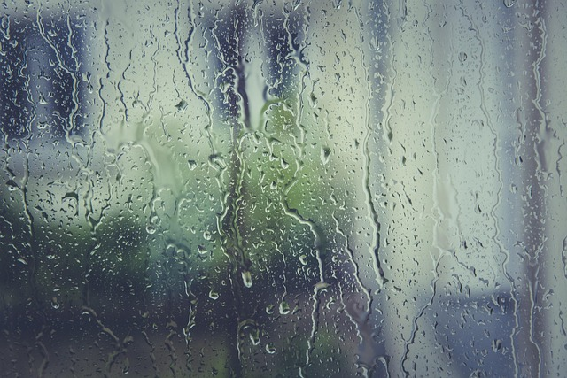

CSS Media Queries
The background will chnage according to the viewport width chnge

Smartphones -From 320px and up(min-width: 320px)
Blue
Tablets,iPads (portrait) -From 768px and up(min-width: 768px)
Green
Tablets,iPads (landscape) -From 1024px and up(min-width: 1024px)
Yellow
Desktops and laptops -From 1224px and up(min-width: 1224px)
Orange
Large screen -From 1824px and up(min-width: 1824px)
Aqua (zoom out if needed [Ctrl & -])
Custom media query -From 850px and up , until 950px(min-width: 850px) and (max-width: 950px)
purple (zoom out if needed [ctrl & -])